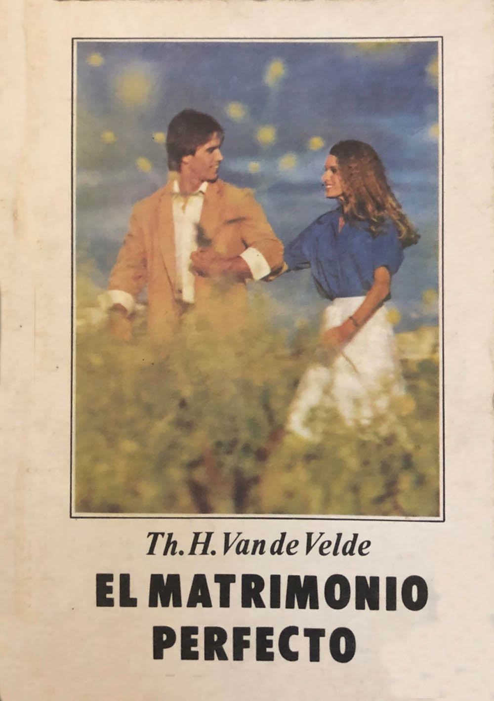
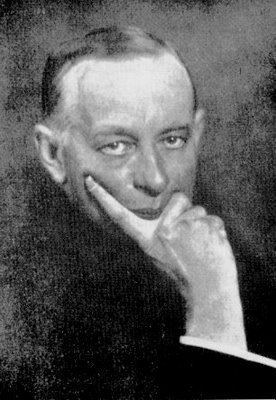

Dr. Th.H.Van de Velde:
El matrimonio perfecto
Theodoor Hendrik Van de Velde (1873-1937), ginecólogo y director de un instituto ginecológico en Haarlem, Países Bajos, publicó en 1926 El matrimonio perfecto (Het volkomen huwelijk), un influyente y revolucionario ensayo sobre la fisiología, la psicología y la técnica de la vida sexual en el matrimonio. Rompió tabús de la época al animar a las parejas casadas a entender y disfrutar plenamente del sexo como un pilar fundamental de la relación conyugal. Se convirtió en un best seller traducido a múltiples idiomas. Sin embargo, debido a su enfoque explícito sobre el placer y la sexualidad, la Iglesia católica lo incluyó en el Index Librorum Prohibitorum (el índice de libros prohibidos que el papa Pablo VI abolió definitivamente en 1966). Como suele ocurrir con la mayoría de las obras censuradas, esta resultó promocionada como una prueba más de la afirmación de Georges Bataille:
La prohibición da un sentido que en sí misma la acción prohibida no tenía. Lo prohibido compromete en la transgresión, sin la cual la acción no tendría el resplandor de maldad que seduce... Es la transgresión de lo prohibido la que hechiza...